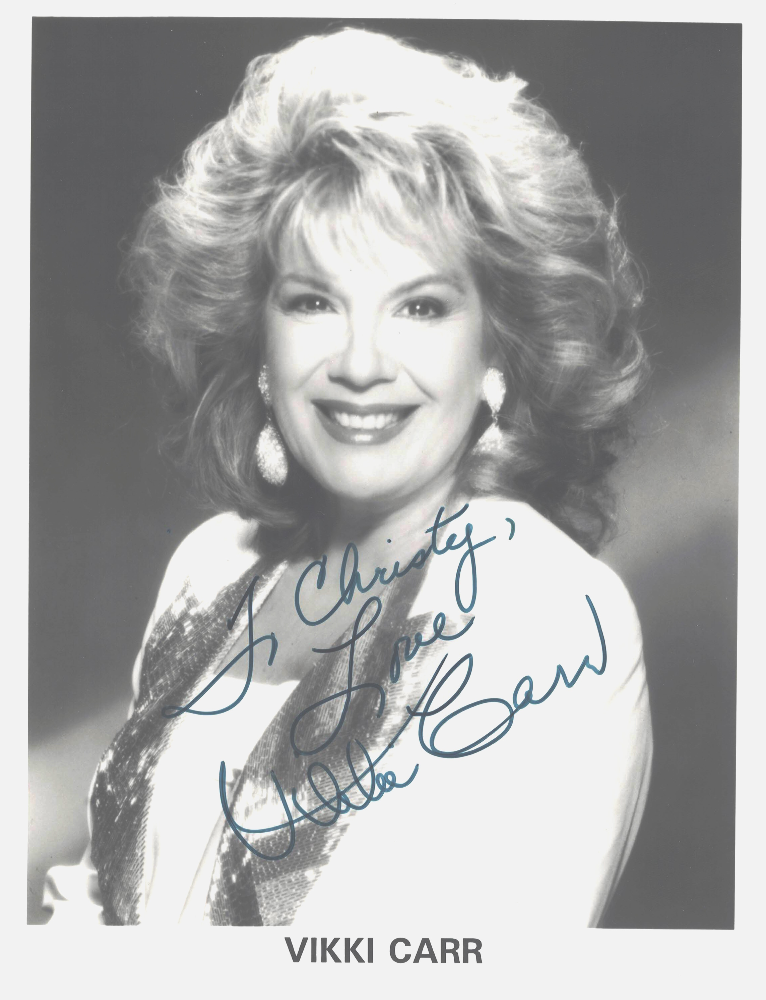

Product No. HEA-0260
$120
Shipping: $8.95
Description
Signed 8x10 B&W photograph. Inscribed
Full Description
Vikki Carr Vikki Carr is an American singer known for her powerful voice and successful career in pop, Latin, and traditional popular music. Born Florencia Bisenta de Casillas-Martinez Cardona in El Paso, Texas, in 1941, Carr began her professional singing career in the early 1960s. She gained national attention with recordings that showcased her dramatic vocal style and ability to perform in both English and Spanish. Her best-known hit is “It Must Be Him,” released in 1967, which became a major international success and earned her Grammy recognition. Other notable recordings include “With Pen in Hand,” “The Lesson,” and “For Once in My Life.” Carr also built a substantial Spanish-language career and became especially popular with Latin American audiences. She recorded numerous albums in Spanish and won Grammy Awards for her Latin music recordings. Throughout her career, Carr appeared frequently on television variety programs and performed in major concert venues around the world. She has also been active in charitable work, particularly supporting education and health-related causes. Carr is recognized for successfully crossing between American pop and Latin music and for maintaining a recording and performing career spanning several decades.
Condition
Excellent condition